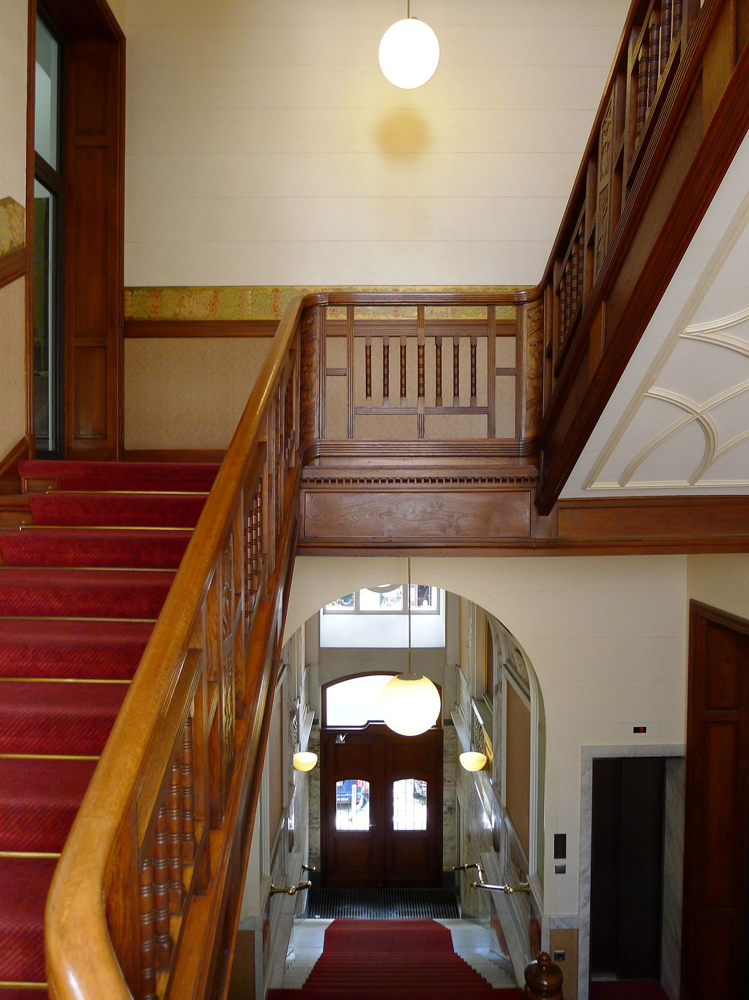

Property management through succession.
An inheritance, family handover or change in ownership brings new responsibility for a property. We help organise documents and open matters, agree responsibilities and maintain continuity in the property’s management.
What you can expect from us
- A clear starting point for new decision-makers
- Continuity in day-to-day property management
- Organised documents and traceable open matters
- An agreed direction for the property after the handover
How we start together
Build an overview
We gather documents, contracts and outstanding matters.
Arrange the handover
We agree the contacts and coordinate the management transition.
Maintain continuity
We look after the property and agree the next priorities with you.
The focus for your property
These priorities build on our rental building management. We agree the specific scope with you.
- Preparation of property records for heirs and new shareholders
- An overview of existing contracts, accounts and open matters
- Agreement on contacts and management responsibilities
- A structured handover from the previous manager
- Joint assessment of priorities after the transition
See how we present figures and documents on our reporting page.
Support for energy renovationWe know from our own family history what it means when buildings pass from one generation to the next, and we guide your portfolio through the transition with the same calm and care. Added to that is analytical discipline from investment banking: transitions are ordered, documented and traceable.
Let's talk about your transition.
Tell us about your property and your next steps. Together, we can establish the right scope of management.